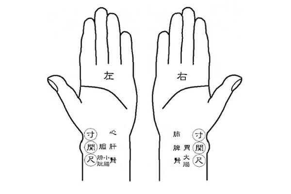
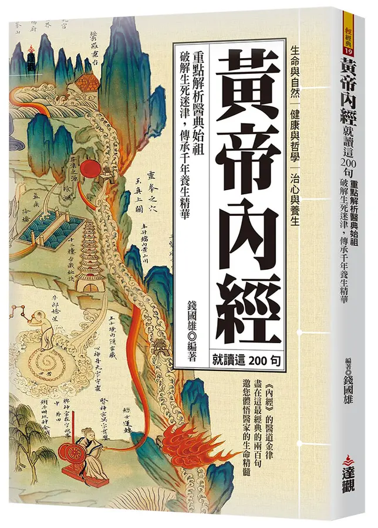

Needles
June 8, 2026
Tight
At my gymnastics studio it's a well-known fact that I'm extremely inflexible. My fellow students are a mix of yoga teachers, fitness coaches, and pilates instructors, so flexibility is in the job description for them. I, on the other hand, am a regular practitioner of calisthenics – exercises which often create tension in the upper back – and spent five years living under a desk as a financial analyst. Naturally, I'm as tight as it gets.
Classes always start with the students gathered in a circle while 謙教練 (Coach Qian) leads us through a few minutes of stretching. This is often a source of great humor for my classmates. It goes like this: Coach 謙 shows us how to do a stretch. I try, struggling to even get into a fundamental version of the position. My classmates start to laugh at me (good-naturedly, I think). Coach 謙 laughs at me, then comes and sits on me to force my body into the correct position. I groan, wince, and gasp, eliciting more laughter from my classmates and Coach 謙. You get the point.
One day during these warm-ups, Coach 謙 was complaining about his back. He said it was so stiff that he hadn't slept well the night before, and he planned to make a trip to see the 中醫 (Chinese medicine) doctor. Given my lack of flexibility was on display in that moment, it occurred to Coach 謙 that I should come along, as the doctor would be able to help with some of my stiffness. I jumped at the opportunity to have someone accompany me to visit a 中醫 doctor.
I'd been to see a 推拿 doctor (a type of Chinese medicine which literally translates to push, squeeze) once before. The doctor was the father of an acquaintance who had just treated me to dinner, so I felt I must accept his repeated offers to exhibit the craft. He laid me down on a massage table and began a treatment similar to what a chiropractor might do, but more intense. After he twisted me up like a bowl of noodles for 20 minutes, I rolled off the table and walked out, admittedly feeling more stiff than when I'd come in. That experience planted a seed of doubt about this whole Chinese medicine situation.
Fortunately, Coach 謙 was going to see an acupuncturist rather than a 推拿 doctor. This acupuncturist also came highly recommended from some other students. Plus, I felt more confident that Coach 謙 was my age, a 30-something former professional gymnast and not a spine-warped uncle evangelizing the local Chinese doctor. As soon as I accepted the offer though, I was already feeling nervous. That was partly because of my previous experience with the 中醫 doctor, but also because I'd never served as a pincushion before. In fact, I can't even look at the nurse when she's giving me a shot. I typically feel like a five-year-old kid asking for a Buzz Lightyear Band-Aid. However, when it comes to acupuncture I did have some tangential experience from my childhood.
I grew up in a pretty rural area. My family had five acres of grassland and kept our horse at the neighbor's barn. Yes, that rural. That meant there was a lot of pollen and dust in the air which, for my sister, facilitated a constant allergic reaction. Our neighbor suggested she try an acupuncturist, and my Eastern medicine-curious father was wholly supportive. I remember my sister being lukewarm about the idea. Thinking back, I wonder if my dad was hopeful his daughter could be one of those miraculous "cured by Eastern medicine" stories that you see as clickbait on news and blog sites. In the end, the treatment had no effect and my sister still gripes about having needles stuck in her face and hands.
Treatment
I met Coach 謙 at the edge of a small, local park on a busy street in the middle of Taipei. The sun was setting and the mosquitos were already nipping at my ankles, sniffing foreign blood. We waited for a few minutes at the 中醫 clinic entrance until the roller shutter opened to show a modern, well-lit interior with glass doors marked by the symbol of the Taiwanese health insurance program. In Taiwan, 中醫 treatments are covered by national insurance which all Taiwanese (and some foreigners) have access to. This is pretty cool, primarily because it honors the tradition of Chinese medicine, but also because it makes treatments super cheap. The healthcare plan in Taiwan costs 26 USD a month, and treatments are usually a small amount on top of that. For example, when I had a cold, I paid 200 NTD (~6 USD) for a doctor's visit and antibiotics. A trip to the acupuncturist was about 500 NTD (~15 USD).2
After I paid my fee, Coach 謙 and I sat in the doctor's office to discuss our respective ailments. 蔡醫師 (Doctor Cai) was pretty startled to see a foreigner in his office. I'm not sure if it was the warm spring day or the impact of this surprise patient in his clinic that was causing beads of sweat to form on his balding head and roll gently down his face. He stuttered momentarily as he asked me if I spoke Chinese and then again stumbled over his words as he asked me if I understood what acupuncture was, given it wasn't a product of Western culture. Specifically, he said something like "you know what's about to happen, right?" I only had the secondhand experience of watching my sister go through treatment, but I didn't want to be turned away so I bluffed my understanding and put on a brave face.
Doctor 蔡 quickly saw through my ruse. Part of the practice of Chinese medicine is 切脈 (pulse diagnosis). As we discussed my perennially hunched shoulders, Doctor 蔡 asked me to lay my hand palm-up on a small rectangular cushion on his desk. He placed two fingers on several different positions of my wrist. There was no doubt he could feel my heart fluttering like a bird as the thought of needles danced in my subconscious.

Then the doctor took us into an adjoining room with two beds separated by a curtain. I took off my shirt and lay face down on a massage table. The doctor first treated Coach 謙, who was grunting and sighing as each needle went into his back. Nervous, my chest tightened again. Then, it was my turn.
Doctor 蔡 began by rubbing a numbing salve on my back which was quickly followed by the pressure of a needle slipping into my skin. The initial impression was just a light pinch, but once the needle was a few centimeters in, I felt it connect with some deeper tissue. Doctor 蔡 would say "酸嗎？" (Is it sore?) after each needle, to which I would respond with an affirmative wheeze. It really was a feeling of soreness, like when you press on your thighs after a leg workout. But this wasn't painful; instead, it somehow elicited a sense of relaxation. The doctor placed about 15 needles from the crown of my head, down my neck, shoulders, and back, with a few in my elbows, the meat of my hand between my thumb and forefinger, and my calves.
Then, I waited. The doctor set a ten-minute timer and left the room. I was still uneasy and my body and brain were tense. Images of pinned insects flitted through my mind. For those first few minutes I tried to stay composed by using a breathing technique to bring my heart rate down. I eventually managed a semblance of calm and even tried closing my eyes to connect more deeply with the sensation. Within a few seconds I was quite dizzy, perhaps even woozy. Doctor 蔡 said if I felt uncomfortable I only needed to raise my voice and a nurse would come running to pull out the needles. But I wasn't about to give up. I snapped my eyes open and refocused my attention on breathing, which allowed me to relax again and even stabilize the slight spinning sensation.3
Finally, the timer sounded and a nurse came. As she uprooted each needle it felt like a string was being plucked in my body. It was as if each muscle fiber was tightly wound around the needle, and as each one came out the fiber slackened. My body loosened up.
But we weren't done yet. Doctor 蔡 came back and this time I sat on the massage table, legs hanging over the edge and facing away from him. He stood behind me and prodded my back with gloved fingers, finding little knots around my shoulder blade. Then he would again apply the numbing salve and sink a needle into the knot. However, this time he pushed the needle deeper beneath the skin and then immediately pulled it out. The effect was like before, but with a greater feeling of 酸 (soreness) and the string-plucking sensation.4 He did five or six spots this way and then we were done; he said goodbye and walked out.
As I pulled my shirt back over my head and collected my things, a wave of serenity poured over me. My body felt quite heavy and my mind moved as if suspended in syrup, processing events in what seemed like slow motion. The last time I had experienced this sensation was after a massage. I recognized that I was in a state of profound relaxation.
Coach 謙 and I left the clinic and I said my goodbyes, thanking him for looking after me. Then I dragged myself home before drifting off into a deep, restful slumber.
Over the next several weeks I visited Doctor 蔡 again and again, each time leaving with that same sense of relaxation. The tightness in my shoulders and back also seemed to be noticeably less significant, although I have no empirical way of measuring that. The experience made me quite curious about the physiological impact of acupuncture. Why were these needles helping me relax and relieve tension?
Theory
Much of the theory of 中醫 comes from ancient Chinese texts. The big daddy of these is the 黃帝內經, which translates to Yellow Emperor's Classic of Internal Medicine. The Yellow Emperor is the mythological father of the Chinese peoples, not a real guy, and this text describes his solutions for various ailments through conversations between him and his physician. There is another text called the 針灸甲乙經 (Canon of Acupuncture and Moxibustion5) which is more prescriptive in its treatments and compiles many of the older classics. Of course, many modern textbooks have since been published, but these two books are the source of much of the theory.
These books describe that the body has channels, called meridians, through which the body's 氣 (energy) flows. Pain, discomfort, or illness is a result of these channels being blocked. Needles are the key to unblocking those channels. From the big daddy of acupuncture (黃帝內經):
…欲以微鍼通其經脈，調其血氣，榮其逆順出入之會6
…instead, I wish to use fine needles to open their meridians, regulate their qi and blood, and harmonize the meeting points where they flow in opposition, accordance, exit, and entry.
The idea is that by placing a needle in exactly the right spot, for exactly the right amount of time, a doctor can open the flow of 氣 and resolve a patient's condition. According to the 黃帝內經, acupuncture can be used to treat anything from constipation to the common cold. However, the modern application of acupuncture is more narrow than what was originally discussed in the classical texts.7

From the perspective of Western medicine, the meridians as mapped in the 黃帝內經 are likely imperfect. In a 2021 study, researchers injected dyes into the arms of volunteers and found that the dyes followed the path of the meridians to a point, and then diverged.9 Imaging showed that there were no arteries or veins along these pathways, but there was some correlation with intermuscular fascia. Fascia is a connective tissue which binds our bodies together, wrapping around bones, muscles, organs, etc. So in my case, I have my doubts that the acupuncture was opening the channels of my 氣, but it certainly seems possible that these needles were stimulating something in the fascia, thereby leading to a release of tension.
Another potential explanation is that acupuncture is stimulating a healing response by increasing blood flow to the treated area, which adds oxygen and nutrients and flushes out inflammation. There has not been a meaningful number of studies that test this. The evidence is undoubtedly still inconclusive. A handful of studies indicated that acupuncture increased blood flow when compared to a control group, and one study also showed that manipulating the needle after insertion (wiggling, twisting, etc.) had more beneficial effects on blood flow. But, to be very clear, there's not enough here to suggest a direct cause-and-effect relationship.10
There is a quote in the 針灸甲乙經 (Canon of Acupuncture and Moxibustion) that talks about the efficacy of needles. It goes like this:
刺之要，氣至而效，效之信，若風吹雲，昭然于天，凡刺之道畢矣11
The essential core of acupuncture is that efficacy comes when the qi arrives. The sign of this efficacy is as reliable as the wind blowing away the clouds, revealing the clear sky. With this, the entire way of acupuncture is complete.12
I think it's fair to say the feeling I usually have after visiting Doctor 蔡 could be poetically summed up as "the wind blowing away the clouds." But there's still speculation about the physiological impact of the treatment, so I don't consider it a wonder cure-all. The impetus for this article was to describe my experience with acupuncture – an experience which has been overwhelmingly encouraging. It's cheap, it has had a positive outcome (relieving tension), and it doesn't appear to be damaging my body. That leads me to believe it's worth doing. But, as I always like to say whenever someone asks me a question I don't know the answer to: I'm not a doctor.
My positive outcome might just be a complex version of the placebo effect. Alternatively, it could be the wind blowing open the doors of the meridians, but it might be something else entirely. You'll only know if it works for you once you try it yourself.
- ↑ aurora.com.tw. Link
- ↑ For comparison, my high-deductible California health care policy also covers acupuncture visits, each with a copay of 15 USD per visit and up to 30 visits in a calendar year. Other Chinese medicinal practices are not covered.
- ↑ In my visits to Doctor 蔡 since, I have been far more relaxed and the treatment has been even more effective. Looking back, I think much of the treatment's effect was lost due to my anxious state of mind.
- ↑ When I revisited Doctor 蔡 for treatment in the subsequent weeks, during this part of the procedure he would also wiggle and twirl the needle once it was beneath the skin.
- ↑ Moxibustion is the practice of burning dried mugwort near acupressure points on the body. I assume it's still practiced but I have never seen it myself.
- ↑ 黃帝內經, "九鍼十二原." Chinese Text Project. Link
- ↑ PubMed. Link
- ↑ Eslite Spectrum. Link
- ↑ New York Times (May 11, 2026). Link; PubMed. Link
- ↑ PubMed. Link; PubMed. Link
- ↑ 針灸甲乙經 (Canon of Acupuncture and Moxibustion). Chinese Text Project. Link
- ↑ If you're thinking to yourself "wow, Andreas' Chinese is really quite good to be reading these classic texts," then guess again, buster. These translations come thanks to the internet. Ancient Chinese is basically a whole different language from modern Chinese.